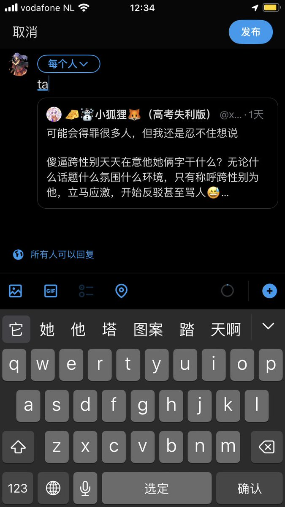

北雁冬翼（simone luxem）🏳️⚧️🏳️🌈🔬
@Simone_Luxem
（来给你看看第一个ta是什么）
而且你说的也不是呀，看你这说的，你是不在意人称代词的，这说明傻逼跨性别其实没有天天在意他她俩字嘛
对于不傻逼的跨性别而言，要求对方用正确的人称代词称呼自己是本分，允许对方用对方随意使用的人称代词称呼是额外的大度，希望你能学会这一点，争取早日不再傻逼

🧀☃小狐狸🦊（高考失利版）
@xhl8964
可能会得罪很多人，但我还是忍不住想说
傻逼跨性别天天在意他她俩字干什么？无论什么话题什么氛围什么环境，只有称呼跨性别为他，立马应激，开始反驳甚至骂人😅
绝大多数人输入法输入ta第一个就是他吧，你们跨性别有权力要求别人为了你而专门改吗，只会给别人留下坏印象，正常的女性会在意这个吗？